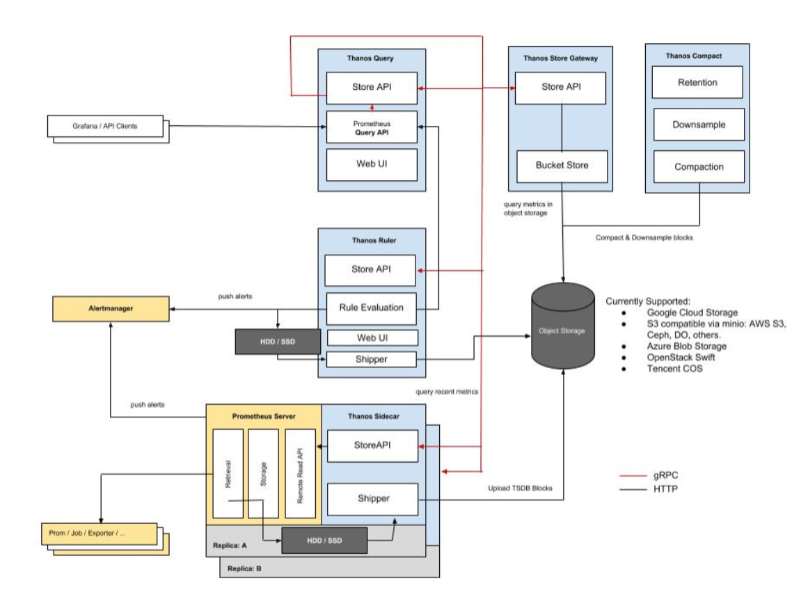
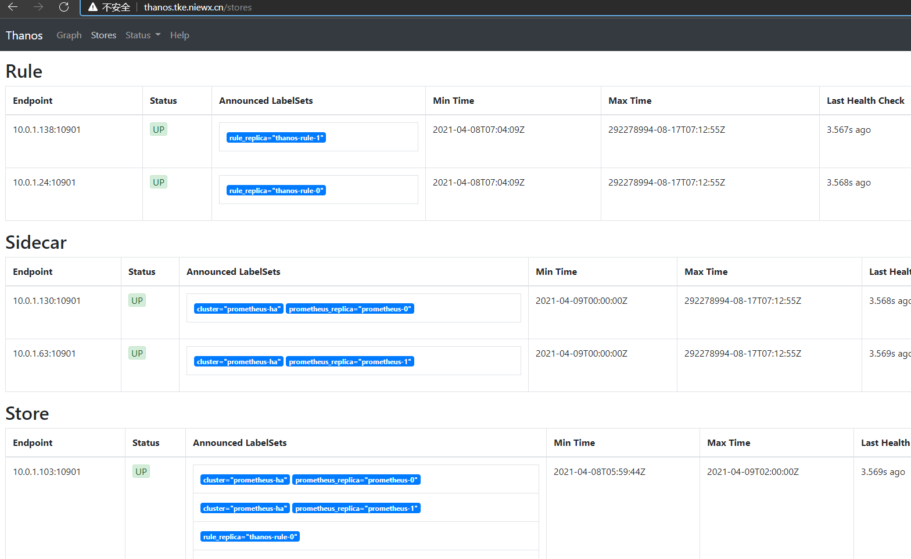
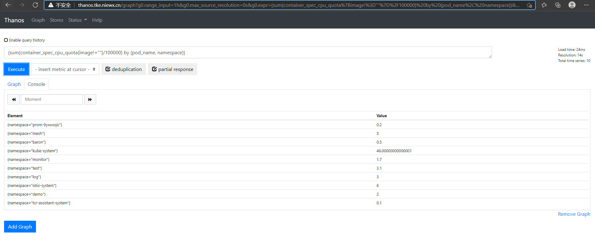
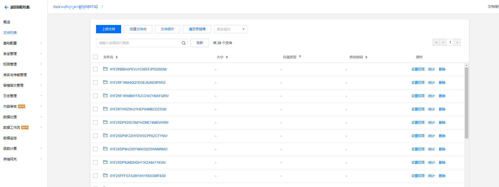

Improbable团队开源了Thanos，一组通过跨集群联合、跨集群无限存储和全局查询为Prometheus增加高可用性的组件。Improbable部署了一个大型的Prometheus来监控他们的几十个Kubernetes集群。默认的Prometheus设置在查询历史数据、通过单个API调用进行跨分布式Prometheus服务器查询以及合并多个Prometheus数据方面存在困难。
Thanos通过使用后端的对象存储来解决数据保留问题。Prometheus在将数据写入磁盘时，边车的StoreAPI组件会检测到，并将数据上传到对象存储器中。Store组件还可以作为一个基于gossip协议的检索代理，让Querier组件与它进行通信以获取数据。
Thanos还提供了时间序列数据的压缩和降采样（downsample）存储。Prometheus提供了一个内置的压缩模型，现有较小的数据块被重写为较大的数据块，并进行结构重组以提高查询性能。Thanos在Compactor组件（作为批次作业运行）中使用了相同的机制，并压缩对象存储数据。Płotka说，Compactor也对数据进行降采样，“目前降采样时间间隔不可配置，不过我们选择了一些合理的时间间隔——5分钟和1小时”。压缩也是其他时间序列数据库（如InfluxDB和OpenTSDB）的常见功能。

Thanos 是一组组件，在官网上可以看到包括：
Bucket
Check
Compactor
Query
Rule
Sidecar
Store
除了官方提到的这些，其实还有：
Thanos通过一种简单的可无缝接入当前系统的方案解决这些问题，今天我们来说说如何在k8s中部署thanos。
对象存储配置 这里我们用的是腾讯云的cos存储，如果需要有用其他云的对象存储，可以参考官网文档https://thanos.io/v0.19/storage.md/
1 2 3 4 5 6 7 8 9 10 11 12 13 14 15 apiVersion : v1kind : Secretmetadata : name : thanos-objectstorage namespace : thanos type : OpaquestringData : objectstorage.yaml : | type : COS config : bucket : "nwx-cos-test" region : "ap-guangzhou" app_id : "1253985742" secret_key : "608zbxhZAVaN7" secret_id : "AKIDJNMITii"
部署prometheus及sidecar 1 2 3 4 5 6 7 8 9 10 11 12 13 14 15 16 17 18 19 20 21 22 23 24 25 26 27 28 29 30 31 32 33 34 35 36 37 38 39 40 41 42 43 44 45 46 47 48 49 50 51 52 53 54 55 56 57 58 59 60 61 62 63 64 65 66 67 68 69 70 71 72 73 74 75 76 77 78 79 80 81 82 83 84 85 86 87 88 89 90 91 92 93 94 95 96 97 98 99 100 101 102 103 104 105 106 107 108 109 110 111 112 113 114 115 116 117 118 119 120 121 122 123 124 125 126 127 128 129 130 131 132 133 134 135 136 137 138 139 140 141 142 143 144 145 146 147 148 149 150 151 152 153 154 155 156 157 158 159 160 161 162 163 164 165 166 167 168 169 170 171 172 173 174 175 176 177 178 179 180 181 182 183 184 185 186 187 188 189 190 191 192 193 194 195 196 197 198 199 200 201 202 203 204 205 206 207 208 209 kind: Service apiVersion: v1 metadata: name: prometheus-headless namespace: thanos labels: app.kubernetes.io/name: prometheus spec: type: ClusterIP clusterIP: None selector: app.kubernetes.io/name: prometheus ports: - name: web protocol: TCP port: 9090 targetPort: web - name: grpc port: 10901 targetPort: grpc --- apiVersion: v1 kind: ServiceAccount metadata: name: prometheus namespace: thanos --- apiVersion: rbac.authorization.k8s.io/v1beta1 kind: ClusterRole metadata: name: prometheus namespace: thanos rules: - apiGroups: [""] resources: - nodes - nodes/proxy - nodes/metrics - services - endpoints - pods verbs: ["get", "list" , "watch" ] - apiGroups: [""] resources: ["configmaps"] verbs: ["get"] - nonResourceURLs: ["/metrics"] verbs: ["get"] --- apiVersion: rbac.authorization.k8s.io/v1beta1 kind: ClusterRoleBinding metadata: name: prometheus subjects: - kind: ServiceAccount name: prometheus namespace: thanos roleRef: kind: ClusterRole name: prometheus apiGroup: rbac.authorization.k8s.io --- apiVersion: apps/v1 kind: StatefulSet metadata: name: prometheus namespace: thanos labels: app.kubernetes.io/name: thanos-query spec: serviceName: prometheus-headless podManagementPolicy: Parallel replicas: 2 selector: matchLabels: app.kubernetes.io/name: prometheus template: metadata: labels: app.kubernetes.io/name: prometheus spec: serviceAccountName: prometheus securityContext: fsGroup: 2000 runAsNonRoot: true runAsUser: 1000 affinity: podAntiAffinity: requiredDuringSchedulingIgnoredDuringExecution: - labelSelector: matchExpressions: - key: app.kubernetes.io/name operator: In values: - prometheus topologyKey: kubernetes.io/hostname containers: - name: prometheus image: prom/prometheus:v2.15.2 args: - --config.file=/etc/prometheus/config_out/prometheus.yaml - --storage.tsdb.path=/prometheus - --storage.tsdb.retention.time=10d - --web.route-prefix=/ - --web.enable-lifecycle - --storage.tsdb.no-lockfile - --storage.tsdb.min-block-duration=2h - --storage.tsdb.max-block-duration=2h - --log.level=debug ports: - containerPort: 9090 name: web protocol: TCP livenessProbe: failureThreshold: 6 httpGet: path: /-/healthy port: web scheme: HTTP periodSeconds: 5 successThreshold: 1 timeoutSeconds: 3 readinessProbe: failureThreshold: 120 httpGet: path: /-/ready port: web scheme: HTTP periodSeconds: 5 successThreshold: 1 timeoutSeconds: 3 volumeMounts: - mountPath: /etc/prometheus/config_out name: prometheus-config-out readOnly: true - mountPath: /prometheus name: prometheus-storage - mountPath: /etc/prometheus/rules name: prometheus-rules - name: thanos image: thanosio/thanos:v0.11.0 args: - sidecar - --log.level=debug - --tsdb.path=/prometheus - --prometheus.url=http://127.0.0.1:9090 - --objstore.config-file=/etc/objectstorage.yaml - --reloader.config-file=/etc/prometheus/config/prometheus.yaml.tmpl - --reloader.config-envsubst-file=/etc/prometheus/config_out/prometheus.yaml - --reloader.rule-dir=/etc/prometheus/rules/ env: - name: POD_NAME valueFrom: fieldRef: fieldPath: metadata.name ports: - name: http-sidecar containerPort: 10902 - name: grpc containerPort: 10901 livenessProbe: httpGet: port: 10902 path: /-/healthy readinessProbe: httpGet: port: 10902 path: /-/ready volumeMounts: - name: prometheus-config-tmpl mountPath: /etc/prometheus/config - name: prometheus-config-out mountPath: /etc/prometheus/config_out - name: prometheus-rules mountPath: /etc/prometheus/rules - name: prometheus-storage mountPath: /prometheus - name: thanos-objectstorage subPath: objectstorage.yaml mountPath: /etc/objectstorage.yaml volumes: - name: prometheus-config-tmpl configMap: defaultMode: 420 name: prometheus-config-tmpl - name: prometheus-config-out emptyDir: {} - name: prometheus-rules configMap: name: prometheus-rules - name: thanos-objectstorage secret: secretName: thanos-objectstorage volumeClaimTemplates: - metadata: name: prometheus-storage labels: app.kubernetes.io/name: prometheus spec: accessModes: - ReadWriteOnce resources: requests: storage: 50Gi volumeMode: Filesystem
Prometheus 使用 StatefulSet 方式部署，挂载数据盘以便存储最新监控数据。
由于 Prometheus 副本之间没有启动顺序的依赖，所以 podManagementPolicy 指定为 Parallel，加快启动速度。
为 Prometheus 绑定足够的 RBAC 权限，以便后续配置使用 k8s 的服务发现 (kubernetes_sd_configs) 时能够正常工作。
为 Prometheus 创建 headless 类型 service，为后续 Thanos Query 通过 DNS SRV 记录来动态发现 Sidecar 的 gRPC 端点做准备 (使用 headless service 才能让 DNS SRV 正确返回所有端点)。
使用两个 Prometheus 副本，用于实现高可用。
使用硬反亲和，避免 Prometheus 部署在同一节点，既可以分散压力也可以避免单点故障。
Prometheus 使用 —storage.tsdb.retention.time 指定数据保留时长，默认15天，可以根据数据增长速度和数据盘大小做适当调整(数据增长取决于采集的指标和目标端点的数量和采集频率)。
Sidecar 使用 —objstore.config-file 引用我们刚刚创建并挂载的对象存储配置文件，用于上传数据到对象存储。
配置下Prometheus的配置文件，这里配置抓取监控数据以及告警策略，监控只抓取了cadvisor的数据，如果需要抓取其他类型监控，可以在prometheus-config-tmpl进行配置job。
1 2 3 4 5 6 7 8 9 10 11 12 13 14 15 16 17 18 19 20 21 22 23 24 25 26 27 28 29 30 31 32 33 34 35 36 37 38 39 40 41 42 43 44 45 46 47 48 49 50 51 52 53 54 apiVersion: v1kind: ConfigMapmetadata: name: prometheus-config-tmpl namespace: thanosdata: prometheus.yaml.tmpl: |- global: scrape_interval: 5 s evaluation_interval: 5 s external_labels: cluster: prometheus-ha prometheus_replica: $(POD_NAME) rule_files: - /etc/ prometheus/rules/ *rules.yaml scrape_configs: - job_name: cadvisor metrics_path: /metrics/ cadvisor scrape_interval: 10 s scrape_timeout: 10 s scheme: https tls_config: insecure_skip_verify: true bearer_token_file: /var/ run/secrets/ kubernetes.io/serviceaccount/ token kubernetes_sd_configs: - role: node relabel_configs: - action: labelmap regex: __meta_kubernetes_node_label_(.+)--- apiVersion: v1kind: ConfigMapmetadata: name: prometheus-rules labels: name: prometheus-rules namespace: thanosdata: alert-rules.yaml: |- groups: - name: k8s.rules rules: - expr: | sum(rate(container_cpu_usage_seconds_total{job="cadvisor" , image!="" , container!="" }[5 m])) by (namespace) record: namespace:container_cpu_usage_seconds_total:sum_rate - expr: | sum(container_memory_usage_bytes{job="cadvisor" , image!="" , container!="" }) by (namespace) record: namespace:container_memory_usage_bytes:sum - expr: | sum by (namespace, pod, container) ( rate(container_cpu_usage_seconds_total{job="cadvisor" , image!="" , container!="" }[5 m]) ) record: namespace_pod_container:container_cpu_usage_seconds_total:sum_rate
部署Query 1 2 3 4 5 6 7 8 9 10 11 12 13 14 15 16 17 18 19 20 21 22 23 24 25 26 27 28 29 30 31 32 33 34 35 36 37 38 39 40 41 42 43 44 45 46 47 48 49 50 51 52 53 54 55 56 57 58 59 60 61 62 63 64 65 66 67 68 69 70 71 72 73 74 75 76 77 78 79 80 81 82 83 84 apiVersion: v1 kind: Service metadata: name: thanos-query namespace: thanos labels: app.kubernetes.io/name: thanos-query spec: ports: - name: grpc port: 10901 targetPort: grpc - name: http port: 9090 targetPort: http selector: app.kubernetes.io/name: thanos-query --- apiVersion: apps/v1 kind: Deployment metadata: name: thanos-query namespace: thanos labels: app.kubernetes.io/name: thanos-query spec: replicas: 3 selector: matchLabels: app.kubernetes.io/name: thanos-query template: metadata: labels: app.kubernetes.io/name: thanos-query spec: affinity: podAntiAffinity: preferredDuringSchedulingIgnoredDuringExecution: - podAffinityTerm: labelSelector: matchExpressions: - key: app.kubernetes.io/name operator: In values: - thanos-query topologyKey: kubernetes.io/hostname weight: 100 containers: - args: - query - --log.level=debug - --query.auto-downsampling - --grpc-address=0.0.0.0:10901 - --http-address=0.0.0.0:9090 - --query.partial-response - --query.replica-label=prometheus_replica - --query.replica-label=rule_replica - --store=dnssrv+_grpc._tcp.prometheus-headless.thanos.svc.cluster.local - --store=dnssrv+_grpc._tcp.thanos-rule.thanos.svc.cluster.local - --store=dnssrv+_grpc._tcp.thanos-store.thanos.svc.cluster.local image: thanosio/thanos:v0.11.0 livenessProbe: failureThreshold: 4 httpGet: path: /-/healthy port: 9090 scheme: HTTP periodSeconds: 30 name: thanos-query ports: - containerPort: 10901 name: grpc - containerPort: 9090 name: http readinessProbe: failureThreshold: 20 httpGet: path: /-/ready port: 9090 scheme: HTTP periodSeconds: 5 terminationMessagePolicy: FallbackToLogsOnError terminationGracePeriodSeconds: 120
因为 Query 是无状态的，使用 Deployment 部署，也不需要 headless service，直接创建普通的 service。
使用软反亲和，尽量不让 Query 调度到同一节点。
部署多个副本，实现 Query 的高可用。
—query.partial-response 启用 Partial Response，这样可以在部分后端 Store API 返回错误或超时的情况下也能看到正确的监控数据(如果后端 Store API 做了高可用，挂掉一个副本，Query 访问挂掉的副本超时，但由于还有没挂掉的副本，还是能正确返回结果；如果挂掉的某个后端本身就不存在我们需要的数据，挂掉也不影响结果的正确性；总之如果各个组件都做了高可用，想获得错误的结果都难，所以我们有信心启用 Partial Response 这个功能)。
—query.auto-downsampling 查询时自动降采样，提升查询效率。
—query.replica-label 指定我们刚刚给 Prometheus 配置的 prometheus_replica 这个 external label，Query 向 Sidecar 拉取 Prometheus 数据时会识别这个 label 并自动去重，这样即使挂掉一个副本，只要至少有一个副本正常也不会影响查询结果，也就是可以实现 Prometheus 的高可用。同理，再指定一个 rule_replica 用于给 Ruler 做高可用。
—store 指定实现了 Store API 的地址(Sidecar, Ruler, Store Gateway, Receiver)，通常不建议写静态地址，而是使用服务发现机制自动发现 Store API 地址，如果是部署在同一个集群，可以用 DNS SRV 记录来做服务发现，比如 dnssrv+_grpc._tcp.prometheus-headless.thanos.svc.cluster.local，也就是我们刚刚为包含 Sidecar 的 Prometheus 创建的 headless service (使用 headless service 才能正确实现服务发现)，并且指定了名为 grpc 的 tcp 端口，同理，其它组件也可以按照这样加到 —store 参数里；如果是其它有些组件部署在集群外，无法通过集群 dns 解析 DNS SRV 记录，可以使用配置文件来做服务发现，也就是指定 —store.sd-files 参数，将其它 Store API 地址写在配置文件里 (挂载 ConfigMap)，需要增加地址时直接更新 ConfigMap (不需要重启 Query)。
部署Store Gateway 1 2 3 4 5 6 7 8 9 10 11 12 13 14 15 16 17 18 19 20 21 22 23 24 25 26 27 28 29 30 31 32 33 34 35 36 37 38 39 40 41 42 43 44 45 46 47 48 49 50 51 52 53 54 55 56 57 58 59 60 61 62 63 64 65 66 67 68 69 70 71 72 73 74 75 76 77 78 79 80 81 82 83 84 85 86 87 88 89 90 91 92 93 apiVersion: v1 kind: Service metadata: name: thanos-store namespace: thanos labels: app.kubernetes.io/name: thanos-store spec: clusterIP: None ports: - name: grpc port: 10901 targetPort: 10901 - name: http port: 10902 targetPort: 10902 selector: app.kubernetes.io/name: thanos-store --- apiVersion: apps/v1 kind: StatefulSet metadata: name: thanos-store namespace: thanos labels: app.kubernetes.io/name: thanos-store spec: replicas: 2 selector: matchLabels: app.kubernetes.io/name: thanos-store serviceName: thanos-store podManagementPolicy: Parallel template: metadata: labels: app.kubernetes.io/name: thanos-store spec: containers: - args: - store - --log.level=debug - --data-dir=/var/store - --grpc-address=0.0.0.0:10901 - --http-address=0.0.0.0:10902 - --objstore.config-file=/etc/objectstorage.yaml - --experimental.enable-index-header image: thanosio/thanos:v0.11.0 livenessProbe: failureThreshold: 8 httpGet: path: /-/healthy port: 10902 scheme: HTTP periodSeconds: 30 name: thanos-store ports: - containerPort: 10901 name: grpc - containerPort: 10902 name: http readinessProbe: failureThreshold: 20 httpGet: path: /-/ready port: 10902 scheme: HTTP periodSeconds: 5 terminationMessagePolicy: FallbackToLogsOnError volumeMounts: - mountPath: /var/store name: data readOnly: false - name: thanos-objectstorage subPath: objectstorage.yaml mountPath: /etc/objectstorage.yaml terminationGracePeriodSeconds: 120 volumes: - name: thanos-objectstorage secret: secretName: thanos-objectstorage volumeClaimTemplates: - metadata: labels: app.kubernetes.io/name: thanos-store name: data spec: accessModes: - ReadWriteOnce resources: requests: storage: 10Gi
Store Gateway 实际也可以做到一定程度的无状态，它会需要一点磁盘空间来对对象存储做索引以加速查询，但数据不那么重要，是可以删除的，删除后会自动去拉对象存储查数据重新建立索引。这里我们避免每次重启都重新建立索引，所以用 StatefulSet 部署 Store Gateway，挂载一块小容量的磁盘(索引占用不到多大空间)。
同样创建 headless service，用于 Query 对 Store Gateway 进行服务发现。
部署两个副本，实现 Store Gateway 的高可用。
Store Gateway 也需要对象存储的配置，用于读取对象存储的数据，所以要挂载对象存储的配置文件。
部署Ruler 1 2 3 4 5 6 7 8 9 10 11 12 13 14 15 16 17 18 19 20 21 22 23 24 25 26 27 28 29 30 31 32 33 34 35 36 37 38 39 40 41 42 43 44 45 46 47 48 49 50 51 52 53 54 55 56 57 58 59 60 61 62 63 64 65 66 67 68 69 70 71 72 73 74 75 76 77 78 79 80 81 82 83 84 85 86 87 88 89 90 91 92 93 94 95 96 97 98 99 100 101 102 103 104 105 apiVersion: v1 kind: Service metadata: labels: app.kubernetes.io/name: thanos-rule name: thanos-rule namespace: thanos spec: clusterIP: None ports: - name: grpc port: 10901 targetPort: grpc - name: http port: 10902 targetPort: http selector: app.kubernetes.io/name: thanos-rule --- apiVersion: apps/v1 kind: StatefulSet metadata: labels: app.kubernetes.io/name: thanos-rule name: thanos-rule namespace: thanos spec: replicas: 2 selector: matchLabels: app.kubernetes.io/name: thanos-rule serviceName: thanos-rule podManagementPolicy: Parallel template: metadata: labels: app.kubernetes.io/name: thanos-rule spec: containers: - args: - rule - --grpc-address=0.0.0.0:10901 - --http-address=0.0.0.0:10902 - --rule-file=/etc/rules/*rules.yaml - --objstore.config-file=/etc/objectstorage.yaml - --data-dir=/var/rule - --label=rule_replica="$(NAME)" - --alert.label-drop="rule_replica" - --query=dnssrv+_http._tcp.thanos-query.thanos.svc.cluster.local env: - name: NAME valueFrom: fieldRef: fieldPath: metadata.name image: thanosio/thanos:v0.11.0 livenessProbe: failureThreshold: 24 httpGet: path: /-/healthy port: 10902 scheme: HTTP periodSeconds: 5 name: thanos-rule ports: - containerPort: 10901 name: grpc - containerPort: 10902 name: http readinessProbe: failureThreshold: 18 httpGet: path: /-/ready port: 10902 scheme: HTTP initialDelaySeconds: 10 periodSeconds: 5 terminationMessagePolicy: FallbackToLogsOnError volumeMounts: - mountPath: /var/rule name: data readOnly: false - name: thanos-objectstorage subPath: objectstorage.yaml mountPath: /etc/objectstorage.yaml - name: thanos-rules mountPath: /etc/rules volumes: - name: thanos-objectstorage secret: secretName: thanos-objectstorage - name: thanos-rules configMap: name: thanos-rules volumeClaimTemplates: - metadata: labels: app.kubernetes.io/name: thanos-rule name: data spec: accessModes: - ReadWriteOnce resources: requests: storage: 100Gi
Ruler 是有状态服务，使用 Statefulset 部署，挂载磁盘以便存储根据 rule 配置计算出的新数据。
同样创建 headless service，用于 Query 对 Ruler 进行服务发现。
部署两个副本，且使用 —label=rule_replica= 给所有数据添加 rule_replica 的 label (与 Query 配置的 replica_label 相呼应)，用于实现 Ruler 高可用。同时指定 —alert.label-drop 为 rule_replica，在触发告警发送通知给 AlertManager 时，去掉这个 label，以便让 AlertManager 自动去重 (避免重复告警)。
使用 —query 指定 Query 地址，这里还是用 DNS SRV 来做服务发现，但效果跟配 dns+thanos-query.thanos.svc.cluster.local:9090 是一样的，最终都是通过 Query 的 ClusterIP (VIP) 访问，因为它是无状态的，可以直接由 K8S 来给我们做负载均衡。
Ruler 也需要对象存储的配置，用于上传计算出的数据到对象存储，所以要挂载对象存储的配置文件。
—rule-file 指定挂载的 rule 配置，Ruler 根据配置来生成数据和触发告警。
然后部署下roler的配置文件
1 2 3 4 5 6 7 8 9 10 11 12 13 14 15 16 17 18 19 20 21 22 23 apiVersion : v1kind : ConfigMapmetadata : name : thanos-rules labels : name : thanos-rules namespace : thanos data : record.rules.yaml : |- groups : - name : k8s.rules rules : - expr : | sum(rate(container_cpu_usage_seconds_total{job="cadvisor" , image!="" , container!="" }[5 m])) by (namespace) record : namespace :container_cpu_usage_seconds_total :sum_rate - expr : | sum(container_memory_usage_bytes{job="cadvisor" , image!="" , container!="" }) by (namespace) record : namespace :container_memory_usage_bytes :sum - expr : | sum by (namespace, pod, container) ( rate(container_cpu_usage_seconds_total{job="cadvisor" , image!="" , container!="" }[5 m]) ) record : namespace_pod_container :container_cpu_usage_seconds_total :sum_rate
部署Compact 1 2 3 4 5 6 7 8 9 10 11 12 13 14 15 16 17 18 19 20 21 22 23 24 25 26 27 28 29 30 31 32 33 34 35 36 37 38 39 40 41 42 43 44 45 46 47 48 49 50 51 52 53 54 55 56 57 58 59 60 61 62 63 64 65 66 67 68 69 70 71 72 73 74 75 76 77 78 79 80 81 82 83 84 85 86 87 88 apiVersion: v1 kind: Service metadata: labels: app.kubernetes.io/name: thanos-compact name: thanos-compact namespace: thanos spec: ports: - name: http port: 10902 targetPort: http selector: app.kubernetes.io/name: thanos-compact --- apiVersion: apps/v1 kind: StatefulSet metadata: labels: app.kubernetes.io/name: thanos-compact name: thanos-compact namespace: thanos spec: replicas: 1 selector: matchLabels: app.kubernetes.io/name: thanos-compact serviceName: thanos-compact template: metadata: labels: app.kubernetes.io/name: thanos-compact spec: containers: - args: - compact - --wait - --objstore.config-file=/etc/objectstorage.yaml - --data-dir=/var/compact - --debug.accept-malformed-index - --log.level=debug - --retention.resolution-raw=90d - --retention.resolution-5m=180d - --retention.resolution-1h=360d image: thanosio/thanos:v0.11.0 livenessProbe: failureThreshold: 4 httpGet: path: /-/healthy port: 10902 scheme: HTTP periodSeconds: 30 name: thanos-compact ports: - containerPort: 10902 name: http readinessProbe: failureThreshold: 20 httpGet: path: /-/ready port: 10902 scheme: HTTP periodSeconds: 5 terminationMessagePolicy: FallbackToLogsOnError volumeMounts: - mountPath: /var/compact name: data readOnly: false - name: thanos-objectstorage subPath: objectstorage.yaml mountPath: /etc/objectstorage.yaml terminationGracePeriodSeconds: 120 volumes: - name: thanos-objectstorage secret: secretName: thanos-objectstorage volumeClaimTemplates: - metadata: labels: app.kubernetes.io/name: thanos-compact name: data spec: accessModes: - ReadWriteOnce resources: requests: storage: 100Gi
Compact 只能部署单个副本，因为如果多个副本都去对对象存储的数据做压缩和降采样的话，会造成冲突。
使用 StatefulSet 部署，方便自动创建和挂载磁盘。磁盘用于存放临时数据，因为 Compact 需要一些磁盘空间来存放数据处理过程中产生的中间数据。
—wait 让 Compact 一直运行，轮询新数据来做压缩和降采样。
Compact 也需要对象存储的配置，用于读取对象存储数据以及上传压缩和降采样后的数据到对象存储。
创建一个普通 service，主要用于被 Prometheus 使用 kubernetes 的 endpoints 服务发现来采集指标(其它组件的 service 也一样有这个用途)。
—retention.resolution-raw 指定原始数据存放时长，—retention.resolution-5m 指定降采样到数据点 5 分钟间隔的数据存放时长，—retention.resolution-1h 指定降采样到数据点 1 小时间隔的数据存放时长，它们的数据精细程度递减，占用的存储空间也是递减，通常建议它们的存放时间递增配置 (一般只有比较新的数据才会放大看，久远的数据通常只会使用大时间范围查询来看个大致，所以建议将精细程度低的数据存放更长时间)
部署Receiver 1 2 3 4 5 6 7 8 9 10 11 12 13 14 15 16 17 18 19 20 21 22 23 24 25 26 27 28 29 30 31 32 33 34 35 36 37 38 39 40 41 42 43 44 45 46 47 48 49 50 51 52 53 54 55 56 57 58 59 60 61 62 63 64 65 66 67 68 69 70 71 72 73 74 75 76 77 78 79 80 81 82 83 84 85 86 87 88 89 90 91 92 93 94 95 96 97 98 99 100 101 102 103 104 105 106 107 108 109 110 111 112 113 114 115 116 117 118 119 120 121 122 123 124 125 126 127 128 129 130 131 132 133 134 135 136 137 138 139 140 141 142 apiVersion: v1 kind: ConfigMap metadata: name: thanos-receive-hashrings namespace: thanos data: thanos-receive-hashrings.json: | [ { "hashring": "soft-tenants" , "endpoints": [ "thanos-receive-0.thanos-receive.kube-system.svc.cluster.local:10901" , "thanos-receive-1.thanos-receive.kube-system.svc.cluster.local:10901" , "thanos-receive-2.thanos-receive.kube-system.svc.cluster.local:10901" ] } ] --- apiVersion: v1 kind: Service metadata: name: thanos-receive namespace: thanos labels: kubernetes.io/name: thanos-receive spec: ports: - name: http port: 10902 protocol: TCP targetPort: 10902 - name: remote-write port: 19291 protocol: TCP targetPort: 19291 - name: grpc port: 10901 protocol: TCP targetPort: 10901 selector: kubernetes.io/name: thanos-receive clusterIP: None --- apiVersion: apps/v1 kind: StatefulSet metadata: labels: kubernetes.io/name: thanos-receive name: thanos-receive namespace: thanos spec: replicas: 3 selector: matchLabels: kubernetes.io/name: thanos-receive serviceName: thanos-receive template: metadata: labels: kubernetes.io/name: thanos-receive spec: containers: - args: - receive - --grpc-address=0.0.0.0:10901 - --http-address=0.0.0.0:10902 - --remote-write.address=0.0.0.0:19291 - --objstore.config-file=/etc/objectstorage.yaml - --tsdb.path=/var/receive - --tsdb.retention=12h - --label=receive_replica="$(NAME)" - --label=receive="true" - --receive.hashrings-file=/etc/thanos-receive-hashrings.json - --receive.local-endpoint=$(NAME).thanos-receive.thanos.svc.cluster.local:10901 env: - name: NAME valueFrom: fieldRef: fieldPath: metadata.name image: thanosio/thanos:v0.11.0 livenessProbe: failureThreshold: 4 httpGet: path: /-/healthy port: 10902 scheme: HTTP periodSeconds: 30 name: thanos-receive ports: - containerPort: 10901 name: grpc - containerPort: 10902 name: http - containerPort: 19291 name: remote-write readinessProbe: httpGet: path: /-/ready port: 10902 scheme: HTTP initialDelaySeconds: 10 periodSeconds: 30 resources: limits: cpu: "4" memory: 8Gi requests: cpu: "2" memory: 4Gi volumeMounts: - mountPath: /var/receive name: data readOnly: false - mountPath: /etc/thanos-receive-hashrings.json name: thanos-receive-hashrings subPath: thanos-receive-hashrings.json - mountPath: /etc/objectstorage.yaml name: thanos-objectstorage subPath: objectstorage.yaml terminationGracePeriodSeconds: 120 volumes: - configMap: defaultMode: 420 name: thanos-receive-hashrings name: thanos-receive-hashrings - name: thanos-objectstorage secret: secretName: thanos-objectstorage volumeClaimTemplates: - metadata: labels: app.kubernetes.io/name: thanos-receive name: data spec: accessModes: - ReadWriteOnce resources: requests: storage: 200Gi
部署 3 个副本， 配置 hashring， —label=receive_replica 为数据添加 receive_replica 这个 label (Query 的 —query.replica-label 也要加上这个) 来实现 Receiver 的高可用。
Query 要指定 Receiver 后端地址: —store=dnssrv+_grpc._tcp.thanos-receive.thanos.svc.cluster.local
request, limit 根据自身规模情况自行做适当调整。
—tsdb.retention 根据自身需求调整最新数据的保留时间。
如果改命名空间，记得把 Receiver 的 —receive.local-endpoint 参数也改下，不然会疯狂报错直至 OOMKilled。
因为使用了 Receiver 来统一接收 Prometheus 的数据，所以 Prometheus 也不需要 Sidecar 了，但需要给 Prometheus 配置文件里加下 remote_write，让 Prometheus 将数据 push 给 Receiver:
1 2 remote_write: - url: http:
thanos通过ingress配置域名访问 1 2 3 4 5 6 7 8 9 10 11 12 13 14 15 16 apiVersion: networking.k8s.io/v1beta1 kind: Ingress metadata: annotations: kubernetes.io/ingress.class: ingress name: thanos-ingress namespace: thanos spec: rules: - host: thanos.tke.niewx.cn http: paths: - backend: serviceName: thanos-query servicePort: 9090 path: /
浏览器输入域名可以查看stores的状态

thanos里面query可以通过promsql进行查询

我们可以到存储桶看下数据是否持久化成功

参考文档 https://cloud.tencent.com/developer/article/1616944
https://thanos.io/v0.19/

This is copyright.